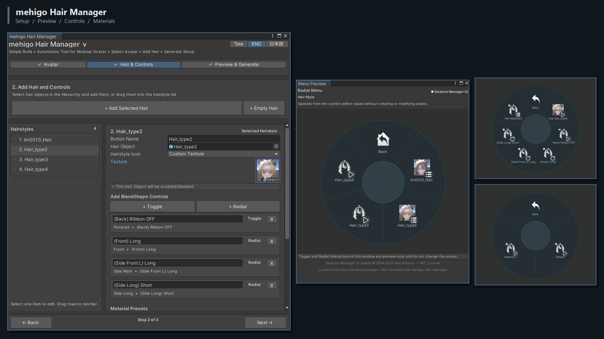

เลือก Avatar
เลือก Avatar Root ระบบจะตรวจ Descriptor และ Output Folder ให้อัตโนมัติ
สร้าง Animator Controller, Animation Clips, Expression Menu, Parameters และ Material Swap controls พร้อมตั้งค่า Component ของ Modular Avatar ที่ใช้เชื่อมระบบเข้ากับ Avatar
Repository URL: https://mehigosleep.github.io/mehigo-hair-manager/vpm.json
เลือก Avatar Root ระบบจะตรวจ Descriptor และ Output Folder ให้อัตโนมัติ
เพิ่มทรงผม, Toggle หรือ Radial BlendShape, Material Presets และ Menu Icons
ตรวจ Menu Preview แล้วสร้าง Control Assets และ Modular Avatar Component Setup ทั้งหมด
ตั้งค่าทรงผมและ Controls พร้อมตรวจเมนูที่ Avatar จะใช้งานผ่าน Real-time Preview

Material Preset ใช้สลับ Material Asset ที่มีอยู่: ระบบไม่ได้สร้าง Material ใหม่หรือแก้ค่าสีใน Shader ผู้ใช้ต้องเตรียม Material แต่ละแบบก่อนนำมาใส่ใน Preset
mehigo Hair Manager จะสร้างหรืออัปเดต Animator Controller และ Layers, Animation Clips, Expression Menu, Parameters และ Material Swap controls จากนั้นตั้งค่า Component ของ Modular Avatar ที่จำเป็น โดย Modular Avatar ยังคงเป็น Core Dependency ที่ทำ non-destructive integration ตอน Build
Modular Avatar พัฒนาโดย bd_ และเป็น Core Dependency ที่จำเป็น mehigo Hair Manager เป็นเครื่องมือ Automation อิสระที่พัฒนาโดยชุมชน ไม่ใช่โปรเจกต์ทางการของ Modular Avatar และไม่มีความเกี่ยวข้องหรือได้รับการรับรองจากผู้พัฒนา
เมื่อติดตั้ง Gesture Manager ไว้ mehigo Hair Manager สามารถโหลด UI assets จาก Package ที่ผู้ใช้ติดตั้ง เพื่อใช้กับ Menu Preview ภายใน Editor โดย Gesture Manager เป็นตัวเลือกเสริม ไม่ได้ bundle มากับ mehigo Hair Manager และไม่มีผลต่อ Generated Avatar Assets
Gesture Manager UI assets © 2019–2023 BlackStartx — MIT License โดย mehigo Hair Manager เป็นโปรเจกต์อิสระและไม่มีความเกี่ยวข้องหรือได้รับการรับรองจาก Gesture Manager หรือผู้พัฒนา
Environment ที่แนะนำ: Unity 2022.3, VRChat Avatars SDK 3.10.4 และ Modular Avatar 1.14.0 โดย Modular Avatar ยังคงเป็น Core Dependency ที่จำเป็น